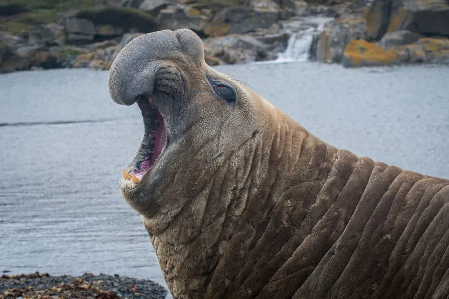

哺乳动物 · 动物界
南象海豹 Mirounga leonina

南极和亚南极海域体型最大的海豹，雄兽鼻部能膨大成桶状、体重可达 3 吨以上，能潜入 1500 米深海捕食。
- 分类
- 门脊索动物门纲哺乳纲目食肉目科海豹科属象海豹属
- 栖息环境
- 南大洋亚南极岛屿与南极半岛的海滩和近岸海域
- 地理分布
- 南乔治亚岛、福克兰群岛、麦夸里岛等亚南极岛屿及南极半岛
- 保护级别
- IUCN 无危（LC）；非中国分布物种
物种志
南象海豹是体型最大的海豹，雄兽体长 4.2–5.8 米、体重 1500–3000 kg，雌兽体长 2.6–3 米、体重 400–900 kg。雄兽的鼻子可以膨大成桶状，用于发出低频吼声，颈部皮肤厚而多皱；全身呈灰褐色。
南象海豹分布于南大洋的亚南极岛屿和南极半岛周围，繁殖季在岛屿海滩上聚集，雄兽通过激烈争斗占据雌兽群。它以鱼类、乌贼和磷虾为食，觅食时可潜入 1000–2000 米深的海水，一次潜水超过 1 小时。雌性妊娠期约 11 个月，每胎 1 仔，寿命约 20–23 年。南象海豹种群数量庞大，被列为无危，但气候变化可能影响其觅食海域。
形态与习性
- 食性鱼类、乌贼与磷虾
- 体长雄 4.2–5.8 m，雌 2.6–3 m
- 体重雄 1500–3000 kg，雌 400–900 kg
- 寿命约 20–23 年
- 繁殖妊娠约 11 个月，每胎 1 仔
- 潜水可达 1000–2000 m
趣味知识
- 南象海豹是体型最大的海豹，雄兽体重可超过 3 吨。
- 雄兽的鼻子能膨大成桶状，发出的吼声传得很远。
- 它能潜入 1500 米以上的深海，一次潜水超过 1 小时。